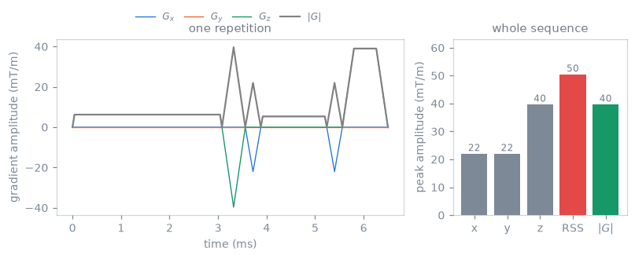
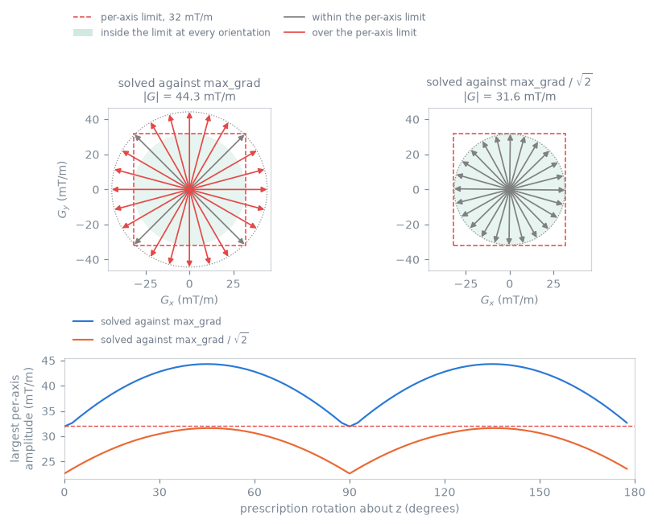
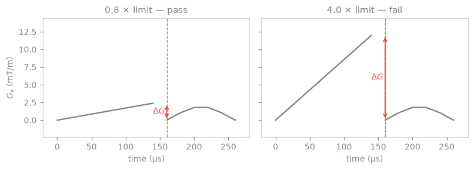
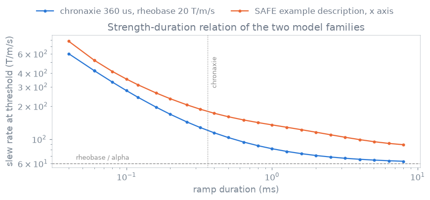
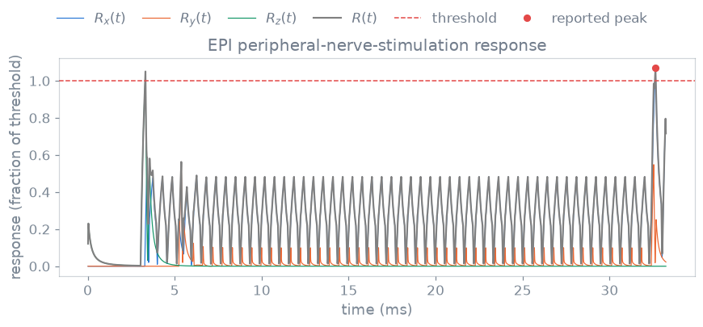
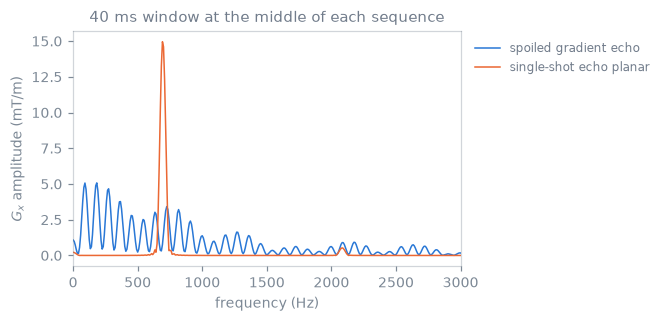

Safety-check computations#
What each function in pypulseqpp.safety evaluates, in which frame and
units, and over which interval. The concepts are in
Safety checks.
Frames and units#
A block’s ROTATIONS extension turns its gradients from the channel axes they
are stored on to the logical axes. A prescription rotation, composed after
each block’s own, turns the logical axes to the physical axes. Every gradient
check reads the waveforms after the blocks’ rotations.
check_pns(),
check_mech_resonance() and
check_spl() take the prescription as rotation, a
3x3 orthonormal matrix. The amplitude, slew-rate and continuity checks read
the rotations the sequence holds; a prescription is applied to them with
TransformFOV before checking.
Check |
Report unit |
Interval |
|---|---|---|
amplitude, slew rate, continuity |
Hz/m, Hz/m/s ( |
every sample |
PNS |
fraction of threshold |
whole sequence, from rest |
mechanical resonance |
mT/m |
sliding windows |
sound pressure |
dB, dB(A) |
the loudest repetition, periodic |
SAR |
W/kg |
each repetition |
Every check returns (is_ok, report); the report is returned whether or not
the check passes.
Gradient amplitude and slew rate#
check_max_grad() evaluates
and reports each axis peak with its 1-based block and the largest simultaneous
vector magnitude \(\max_t |\mathbf{G}(t)|\). Only the per-axis quantity is
compared, because max_grad in a Pulseq system description is a per-axis
limit. check_max_slew() does the same for
\(\mathrm{d}G_a/\mathrm{d}t\) within each block: for a trapezoid, the amplitude
over the ramp time; for an arbitrary gradient, the difference between
neighbouring samples over their spacing on the gradient raster. A nonpositive
limit disables its comparison.
A readout traversing \(\Delta k = N/\mathrm{FOV}\) in a window \(T\) needs
\(G = \Delta k / T\) in Hz/m. For an area \(A\) at slew rate \(S\), the shortest
lobe is a triangle of peak \(\sqrt{AS}\) and duration \(2\sqrt{A/S}\); above
max_grad it acquires a flat top.
apply_system_derates() returns a copy of the system limits
with max_grad and max_slew scaled from base values the copy retains, so
derating does not compound; cap_system() lowers them to
stated ceilings, and a ceiling put on a derated copy holds when the copy is
derated again. A trajectory solver that derates its system therefore takes no
second margin from a system the caller derated.

A radial gradient echo. The root-sum-square of the three axis peaks is larger than the largest simultaneous vector magnitude, because the axes peak at different times.#

The in-plane gradient vector of a Cartesian gradient echo at the instant its
magnitude is largest, at prescription rotations 15 degrees apart. Left, solved
against max_grad, with both axes at the limit: only diagonal orientations
keep both components inside. Right, solved against max_grad divided by
\(\sqrt2\). Below, the largest per-axis amplitude against the prescription angle.#
Gradient continuity#
check_grad_continuity() compares, on each axis after
the blocks’ rotations, the last amplitude of a block with the first of the
next:
It reports the 1-based block, axis, both amplitudes and the implied slew rate.
The final amplitude on every axis must be zero, or ends_at_zero and the
verdict are false. check_timing() reports the same
as GRADIENT_DISCONTINUITY and GRADIENT_NOT_RAMPED_DOWN.

A boundary step below the one-raster limit passes; a larger step is reported.#
Peripheral nerve stimulation#
For a rectangular stimulus of duration \(\tau\), the chronaxie threshold is \(S(\tau) = S_{\mathrm{rh}}(1 + c/\tau)\), with rheobase \(S_{\mathrm{rh}}\) and chronaxie \(c\).[1]
Model |
Coefficients |
Source |
|---|---|---|
one chronaxie; rheobase and |
stated, or measured on the coil |
|
SAFE |
three exponential terms, amplitude scale and stimulation limit per axis |
Siemens |
Each physical axis’s slew waveform drives its response \(R_a(t)\), and
\(R(t) = \sqrt{R_x^2 + R_y^2 + R_z^2}\). The check fails where \(R\) exceeds the
threshold fraction. The response depends on the preceding slew history, so the
sequence is evaluated in one pass from rest. The chronaxie response is read at
the end of every gradient raster interval, from the slew that interval plays; a
ramp’s response peaks where the ramp ends, so the peak reported is the peak of
the exact convolution. SAFE is read at interval centres, as upstream PyPulseq’s
calc_pns reads it. With equal coefficients on every
axis a rotation leaves \(R\) unchanged; per-axis coefficients make it depend on
the prescription.

Slew rate at unity response for a demonstration chronaxie model and the PyPulseq SAFE example hardware description.#

Axis responses, combined response, threshold and reported peak for one EPI acquisition under a synthetic chronaxie model.#
Mechanical resonance#
Each physical axis is sampled at the centres of the sequence’s gradient raster.
A window of window_width (40 ms by default) starts every stride (half a
window by default); the last is zero-filled to the end. Each window is
mean-subtracted, multiplied by a Hann taper \(w\), zero-padded to
frequency_oversampling (3) times its length and transformed, with
so a sustained sinusoid of amplitude \(A\) at a bin frequency reads \(A\) in mT/m.
The check evaluates only the bins a band reads, as direct sums;
mech_resonance_spectrum() returns every bin of one
window from a real FFT of the same samples.
A ForbiddenBand is an axis (None for all three),
an inclusive range in Hz and a tolerance in mT/m. The threshold is the
tolerance where positive and min_threshold (10 mT/m) otherwise. A band is
violated by each window whose largest amplitude on a bin inside it exceeds the
threshold on any axis it guards; a band narrower than a bin is read at the bin
nearest its centre. The report keeps each band’s worst window.
read_forbidden_bands() reads the acoustic resonances
of a Siemens .asc file as centre ± bandwidth/2 on all axes, tolerance 0.
Echo-spacing lockout tables state a tolerance as a gradient amplitude: the
echo spacing is locked when the readout gradient exceeds it. With
tolerance_limits="gradient" a band with a positive tolerance is violated by
a window that holds a line above min_line (6 mT/m) inside the band while the
axis’s gradient magnitude over the window exceeds the tolerance. The gradient
magnitude is bounded by the logical channels’ extremes turned onto the axis,
which is exact for an unrotated prescription.
A window’s Hann main lobe spans \(\pm 2/T_W\), so a strong line just outside a
band leaks into it: \(\pm 100\) Hz for a 20 ms window. With reread (on by
default), each window that exceeds a band is read again over a window four
times longer, centred on it, around the band widened by \(2/T_W\). If the
strongest line there lies outside the band and keeps 80 % of the amplitude the
short window read, the line is steady and outside the band, and the window
counts as leakage, not as a violation. A short train loses amplitude in the
long window in proportion to its length, so its reading stands. Only the
windows that exceeded are read again, so a design that exceeds no band pays
nothing for it.
A wide band is read only where the gradient can reach its threshold. Summing by parts, a window’s reading at \(f\) is bounded by
where \(V\) is the total variation of the axis’s samples over the window and \(\Delta t\) the gradient raster. The check bounds \(V\) per window from the corners of the blocks it overlaps, and reads a band wider than 256 bins only up to where the bound at the largest \(V\) meets the threshold. No verdict changes; a band open towards the raster’s Nyquist frequency costs what its reachable part costs.
A train alternating at echo spacing \(\Delta t\) has its fundamental at \(1/(2\,\Delta t)\), with an amplitude between \(8/\pi^2\) (triangular) and \(4/\pi\) (square) of the plateau, and odd harmonics. A tolerance stated as a plateau amplitude is compared unscaled with this spectral amplitude.[2] The criterion applies to the commanded waveform; it models neither the coil’s transfer function nor its acoustic output.

The readout-axis spectrum of a 40 ms window at the middle of two 64 x 64 sequences: a spoiled gradient echo and a single-shot echo-planar train.#
Sound pressure#
check_spl() takes the repetition of
repetition(), counted from block 1, over which the
squared gradient summed over the axes integrates to the most, the earliest on a
tie. It filters that repetition by the acoustic transfer function of each
physical axis as a periodic waveform and reports the peak in dB, the
A-weighted RMS in dB(A) and the unweighted RMS in dB, against 140 dB and
99 dB(A) by default (IEC 60601-2-33). A sequence without gradients reads
-inf. read_acoustic_response() reads the transfer
function from HDF5, per mT/m on its positive bins.
SAR#
Local SAR at a position, for channel phasors \(\mathbf{v}\), is
\(\mathbf{v}^{\mathsf H} Q \mathbf{v}\). VOPs \(\{Q_k\}\) bound the largest value
over the body model by \(\max_k \mathbf{v}^{\mathsf H} Q_k \mathbf{v}\).[3]
VopModel holds the \((N, N_c, N_c)\) stack in W/kg
per unit drive squared, optional global matrices (one, or one per body model)
and metadata whose safety_factor \(M \geq 1\) multiplies local SAR.
read_vops() reads .mat and .npz, point-first and
channel-first, including mariepy’s population files.
Channel \(c\) is driven with \(v_c(t) = d_c\,s_c\,b_c(t)\): drive_per_hz, the
block’s RF shim (or default_shim for a single-channel pulse, played on every
channel) and the RF waveform in Hz resampled every microsecond, as
calc_rf_power() does. In a window \(W\) of duration \(T_W\),
and global SAR is the same integral with the global matrix, the largest over
the body models. The windows are consecutive repetitions of tr_size blocks
(repetition(), or a TRSize definition the blocks
repeat with); blocks before the first repetition form a window of their own,
and a sequence that does not repeat is one window. Limits default to 10 W/kg
local and 3.2 W/kg global (IEC 60601-2-33 normal mode, head). The report gives
each window’s blocks, duration, local SAR, VOP index, global SAR and body
model. No regulatory averaging interval is applied.
Reference-pulse ratios#
With reference, the reference is played under the same model, drive and
default shim. With \(\mathrm{SAR}^{\mathrm{ref}}_{G_b}\) its global SAR in body
model \(b\), in its window of largest global SAR of duration \(T^{\mathrm{ref}}\),
reported as local_to_head and global_sar_ratio; with each window’s term
times \(T_W/T^{\mathrm{ref}}\), as local_to_head_energy and
global_energy_ratio; per window in windows.local_to_head and
windows.global_ratio. The smallest reference SAR over the body models sets
the largest drive scale, so it sets the local term. The global term is taken
body by body, because a subject’s global SAR is that of one body.
If the scanner holds the reference at the global limit \(L_G\) at its shortest repetition time, a window’s local SAR is at most \(r_{\mathrm{local}} L_G\), and the sequence meets both limits when each repetition lasts at least
with \(L_L\) the local limit. This rests on the scanner’s prediction for the
reference not falling below its true global SAR, and on the VOPs and safety
factor bounding local SAR. The scale of drive_per_hz and of the matrices
cancels; relative channel gains and the safety factor do not. A report of an
earlier call can stand for the reference.
example_vops() is a synthetic eight-channel loop
array around a uniform cylinder, with no tissue, coupling or conservative
field.